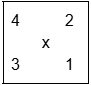

Pinouts
Timer
Timer 6: Clock for the entire System
Peripherals
I2C2: Barometer/DPS
- PB10: SCL
- PB11: SDA
SPI4: IMU/ICM-40609
- PE12: SCK
- PE13: MISO
- PE14: MOSI
- PE15: CS
I2C1: BNO055
- PB8: SCL
- PB9: SDA
I2C4: Magnetometer
- PD12: SCL
- PD13: SDA
I2C3: EEPROM
- PA8: SCL
- PC9: SDA
UART 4: GPS Module
- PA0: TX
- PA1: RX
Other
External Clock: HSE
- PH0: Input
- PH1: Out
USB FS
- PA11: D-
- PA12: D+
- PA9: VBUS
USART2: EXPRESS LRS
- PA2: TX
- PA3: RX
Debugging
LED GPIOS
- PE2 – BLUE
- PE3 – GREEN
Available
SPI3
- PB5: MOSI
- PB4: MISO
- PB3: SCK
- PD7: CS
USART1
- PB7: RX
- PB6: TX
USART3
- PC11: RX
- PC10: TX
DShot
Motor PWMs - page 88 MCU datasheets:
- PC6: Timer 3 Channel 1 PWM generation
- PC7: Timer 3 Channel 2 PWM generation
- PC8: Timer 3 Channel 3 PWM generation
- PB1: Timer 3 Channel 4 PWM generation
Motor USART - Telemetry Pin in case of bidirectional DShot failure:
- PD6: RX
ESC
2 boards with 2 MCUs each. Preliminarily: 1 & 3 will share a board, and 2 & 4 will share a board
ESC Layout:
